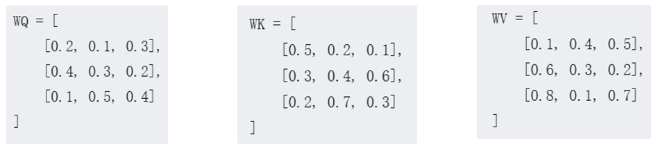
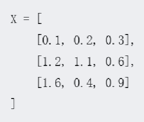
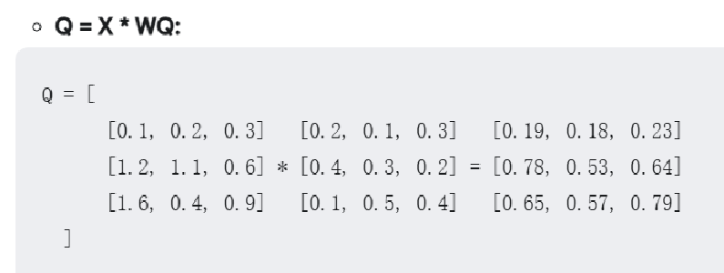
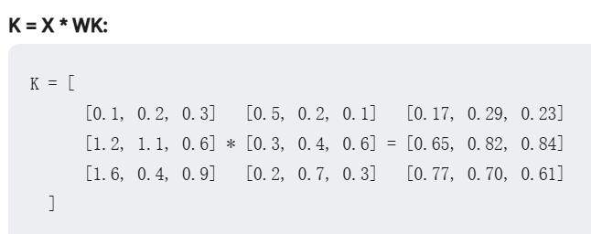
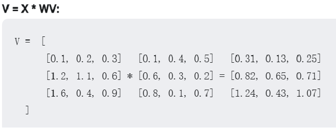
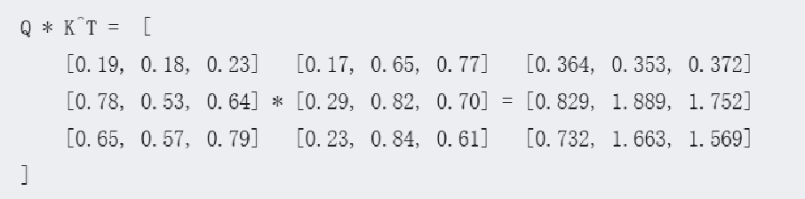
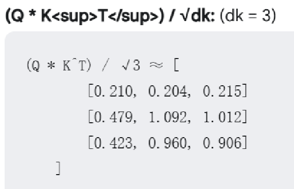
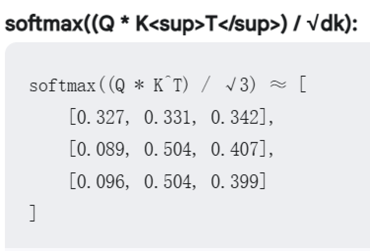

AI大语言模型 (Artificial Intelligence Large Language Model)
• AI (Artificial Intelligence): 人工智能。这部分表明了AI的本质——不是一个真实的人类，而是通过计算机程序和算法构建出来的智能体。能够执行通常需要人类智能才能完成的任务，比如学习、推理、解决问题、理解语言等等。
• 大 (Large): 大型。这个词描述了模型的规模。AI通过学习海量的文本数据（例如书籍、文章、网站内容等）来获得知识和能力。 "大型"意味着模型拥有庞大的参数数量（可以理解为神经元之间的连接），这使得AI模型能够处理和生成复杂的语言模式。
• 语言 (Language): 语言。这表明了我的主要功能和应用领域。我专注于理解和生成人类语言。我可以阅读、写作、翻译、总结文本，并与人类进行对话。
• 模型 (Model): 模型。这个词指的是我的构建方式。我是一个基于数学和统计学的模型。更具体地说，我通常是基于一种叫做"Transformer"的深度学习架构。这个模型通过分析大量文本数据中的统计规律，来学习词语之间的关系、句子的结构以及语言的整体模式。
所以"AI大语言模型"可以看成 是一种基于数学和算法构建的、用于执行特定人工智能任务的结构。它本质上是由大量的参数、算法和数据组成的复杂系统。
整体架构：Transformer
目前主流的大语言模型大多基于Transformer架构。Transformer的核心思想是"自注意力机制"（Self-Attention Mechanism），这使得模型能够捕捉文本序列中不同词语之间的关系，无论这些词语在句子中的距离有多远。
核心组件：层（Layers）
Transformer模型是由多个相同的"层"（Layer）堆叠而成的。每个层都包含以下几个关键子组件：
自注意力层（Self-Attention Layer）：
这是Transformer的核心。它允许模型关注输入序列中不同位置的信息，并计算它们之间的关系。
从线性代数的角度来看，自注意力机制可以看作是对输入序列进行一系列线性变换（矩阵乘法），然后通过Softmax函数进行归一化，得到注意力权重。这些权重表示不同位置之间的相关性。
前馈神经网络层（Feed-Forward Neural Network Layer）：
在自注意力层之后，每个位置的表示都会通过一个前馈神经网络进行处理。
这个前馈网络通常包含两个线性变换（矩阵乘法）和一个激活函数（如ReLU）。
残差连接（Residual Connections）：
在每个子层（自注意力层和前馈网络层）周围都有一个残差连接。
这意味着子层的输入会直接加到子层的输出上。这有助于缓解深度神经网络中的梯度消失问题，使得模型更容易训练。
层归一化（Layer Normalization）：
在每个子层之后，都会应用层归一化。
层归一化有助于稳定训练过程，并提高模型的性能。它会对每个样本在层的维度上进行归一化。
基本组成单元：神经元（Neurons）
无论是自注意力层还是前馈神经网络层，它们都是由大量的"神经元"组成的。每个神经元可以看作是一个简单的计算单元。
总结一下：
从最底层到最高层，模型的构成可以这样理解：
神经元： 执行基本计算单元（加权求和、激活函数）。
层： 由多个神经元组成，包括自注意力层和前馈神经网络层，以及残差连接和层归一化。
Transformer架构： 由多个层堆叠而成，利用自注意力机制捕捉文本序列中的长距离依赖关系。
参数： 模型的权重和偏置，通过学习数据来调整。比如deepseek参数最大的是671B.
层的概念
什么是"层"？
你可以把"层"想象成一个信息处理的"工序"或者"步骤"。每一层都接收一些输入信息，然后对这些信息进行特定的处理和转换，最后输出处理后的信息给下一层。
就像工厂里的流水线一样：
原材料： 输入的文本（例如，你的问题）。
第一道工序： 第一层处理原始输入，识别基本特征。
第二道工序： 第二层接收第一层的输出，处理更复杂的模式。
第三道工序： 第三层接收第二层的输出，处理更高级的抽象概念。
... 以此类推 ...
最终产品： 模型对输入文本的最终理解（比如，判断这句话的情感是积极还是消极）。
为什么需要"多层"？
为什么要这么多层，而不是一层搞定呢？
这是因为理解语言是一个非常复杂的任务，需要从不同的层面进行处理：
浅层： 处理词汇和基本语法结构。
中层： 理解句子的语义和句子间的关系。
深层： 把握更抽象的概念、意图和上下文。
多层架构使得模型能够逐步构建对输入的理解，从简单到复杂，从具体到抽象。
举个例子：图像识别
虽然我们主要讨论的是语言模型，但"层"的概念在图像识别中也非常常见，而且更容易可视化理解。
想象一下，一个用于识别猫的图像的神经网络：
第一层： 识别简单的边缘和线条。
第二层： 组合这些边缘，识别简单的形状（如圆、椭圆）。
第三层： 组合这些形状，识别特征（如眼睛、耳朵）。
第四层： 组合这些特征，识别整体（"这是一只猫"）。
语言模型的工作原理也类似，只是处理的是文本而不是图像。

层与层之间有什么关系？
虽然不同的层负责不同级别的抽象，但它们之间是紧密联系的：
信息流动： 每一层都接收前一层的输出作为输入，并将自己的输出传递给下一层。
参数共享： 在Transformer模型中，同一层内的自注意力机制允许每个位置的词"看到"序列中的所有其他词。
残差连接： 每一层不仅接收前一层的输出，还会接收一些"捷径连接"，使得信息可以更直接地从较低层传递到较高层。

当语言模型处理中文例题：高考数学题
一道经典的例题就可以很好地说明大语言模型的缺陷。
下面是一道高考数学题：
在一列车等候检票的队伍中，学生票占总票数的四分之一，儿童票占学生票的二分之一，成人票占儿童票的24倍。队伍中站了一位再等一等也没有了，该位置是什么票？

请问：这位学生最终购买了几等座呢？
笔者拿了市面上比较知名的10款AI，其中还包括deepseekR1,Claude等知名大模型。结果是没有一个模型能够判断"再等一等也没有了"这句话断句方式是这样的：再等/一等/也没有了。所有的模型都是这样断句的，再/等一等/也没有了。可以说是全军覆没。
因此现阶段AI尚且不能从字母意义上理解，那它们是怎么理解的呢？这还的从AI大模型的本质上来说。开头我们就介绍了，模型本质是数学和算法的结合体。它实际上就算数学的应用，所以它只能从数学的角度理解一句话。这就是词嵌入——语言的数字化。
词嵌入：语言的数字化
AI模型无法直接处理文本。人类直观理解的文字对机器来说毫无意义。为了解决这个问题，AI需要将文本转换为数字表示，这个过程叫做"词嵌入"（Word Embedding）。

词嵌入是什么？
词嵌入是将词语映射到高维向量空间的技术。简单来说，就是给每个词分配一个数字向量（例如，一个包含100-1000个数字的列表）。这个向量在高维空间中代表了这个词。
例如，"国王"可能被表示为：[0.2, -0.5, 0.7, ..., -0.1]
这些向量不是随机分配的，而是通过机器学习算法从大量文本中学习得到的。学习的目标是使得：
•语义相似的词，对应的向量在空间中距离较近。 例如，"king" 和 "queen" 的向量应该比较接近。
•语义相关的词，向量之间存在一定的关系。 例如，"king" - "man" + "woman" 的结果向量应该与 "queen" 的向量比较接近（经典的"国王-男人+女人=女王"的例子）。
词嵌入矩阵不具备唯一性.因为是自己学习的，所以不能从词嵌入上理解本质含义。

如何"理解"一句话：自注意力机制
自注意力机制（Self-Attention）是大型语言模型理解输入序列的核心。它通过计算序列中每个词与所有其他词的关联程度，使模型能够"关注"重要的信息。

自注意力机制的工作原理：
对于输入序列中的每个词，我们都计算三个向量：
▪Query (Q): 查询向量。可以理解为"我需要关注什么？"
▪Key (K): 键向量。可以理解为"我有什么信息可以提供？"
▪Value (V): 值向量。可以理解为"我提供的具体信息是什么？"◦
这三个向量是通过将每个词的词嵌入向量与三个不同的权重矩阵（WQ, WK, WV）相乘得到的。这些权重矩阵是模型需要学习的参数。

计算注意力分数：
对于每一对词，我们计算它们之间的注意力分数：
注意力分数 = (Query向量) · (Key向量) / sqrt(d_k)
其中，d_k是Key向量的维度，用于缩放以防止梯度消失。
应用Softmax函数：
对每个词的注意力分数应用Softmax函数，得到归一化的注意力权重（总和为1）。
加权求和：
使用这些权重对Value向量进行加权求和，得到每个位置的输出表示。
通过这个过程，模型能够根据上下文动态调整对输入序列中不同部分的关注度，从而更好地理解句子的含义。

实际例子：
步骤一：
1.分词： 将句子"今天天气怎么样"分词为：
["今天", "天气", "怎么样"]
2.词嵌入： 将每个词映射到词嵌入向量：
今天 -> [0.2, 0.5, -0.1, ...]
天气 -> [0.3, -0.2, 0.7, ...]
怎么样 -> [-0.1, 0.4, 0.2, ...]
3.生成Q、K、V向量： 对每个词，我们计算其查询、键和值向量。
步骤二：
1.计算注意力分数： 每个词的查询向量与所有词的键向量做点积，得到注意力分数矩阵。
2.归一化： 应用Softmax函数，得到注意力权重。
3.加权求和： 使用这些权重对值向量进行加权平均，得到每个位置的新表示。
这样，"今天"这个词的表示现在包含了"天气"和"怎么样"的信息，而且是根据它们与"今天"的相关性进行加权的。
多头注意力： 实际上，Transformer使用的是多头注意力（Multi-Head Attention），即同时计算多组独立的注意力，然后合并结果。这使得模型能够关注不同类型的关系和模式。
通过这种方式，语言模型能够捕捉词语之间的关系和上下文依赖，从而更好地"理解"输入的文本。
总结：
AI大语言模型通过以下步骤"理解"一句话：
1. 分词：将输入文本分解为词语或标记。
2. 词嵌入：将每个词映射到高维向量空间中。
3. 自注意力计算：通过计算词语之间的关联性，生成上下文相关的表示。
4. 多层处理：通过多层Transformer堆叠，逐步构建从词汇到句子再到段落的理解。
5. 特定任务处理：根据任务需求（如生成文本、回答问题等）进行最终处理。
虽然这个过程与人类理解语言的方式有所不同，但它使AI模型能够在各种语言任务上表现出色，并且随着模型规模和训练数据的增加，性能也在不断提升。